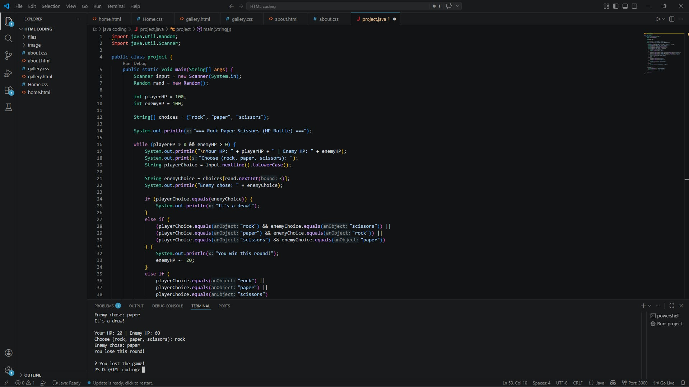
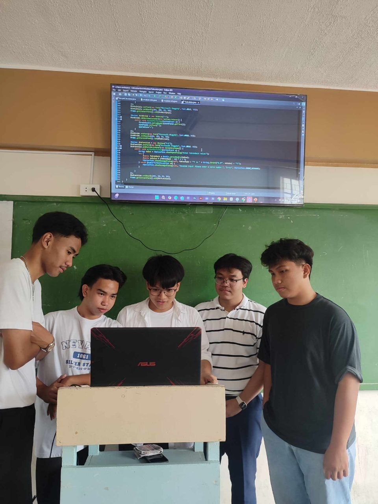

This is one of the early simple game that I've made on Java. It's a simple Rock Paper Scissors game with health points added, making it last longer than the typical version.

This was my very first project back in Senior High School—a simple calculator that I built while learning programming basics. It marked the start of my development journey.